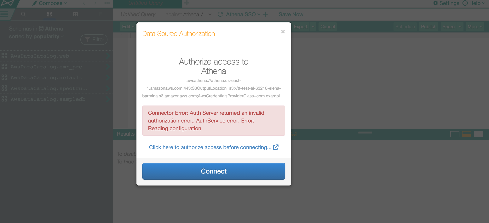
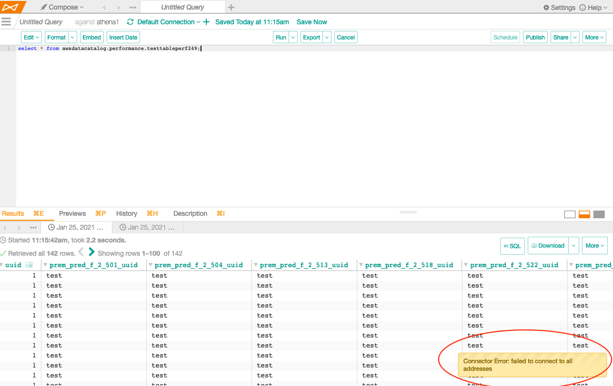

Troubleshoot SSO Authentication with Amazon Data Sources¶
Applies from release 2021.1
Logs to Review¶
The following log files provide state, event, and error information for the AuthService component of Alation (path inside the Alation shell):
/opt/alation/site/logs/authserver_err.log
/opt/alation/site/logs/authserver.log
/opt/alation/site/logs/authserver_out.log
Configuration Files to Review¶
AuthService configuration files are stored at /opt/alation/site/config/authserver/<config_name>.json (path inside the Alation shell).
Error Messages¶
Most of the error messages listed below will appear on the Connect dialog in Compose and the Catalog, for example:

Some error messages will appear on a slide-out on bottom right in Compose:

Some error messages may be visible in AuthService logs only.
Error |
Cause |
Troubleshooting |
|---|---|---|
Callback Handler: null: state* |
SAML Response received by the Callback handler contains invalid information. |
Inspect the SAML response for the required SAML Attributes. Minimal configuration requires that SAML assertion should include Role and RoleSessionName. |
Redirect handler exception: (java.io.FileNotFoundException: ./aws_iam1.json (No such file or directory)) Configuration {name} does not exist. |
Compose is trying to use an
IAM plug-in configuration that
does not exist. In the example
|
Check that the configuration object
with {name} exists on the Alation
server. If it does not exist, create
it and try again.
If it exists, check its filesystem
permissions: the .json file
must be readable by user |
Connector Error: failed to connect to all addresses |
AuthService is not configured or has stopped. |
Check |
Missing configuration for Redirect URL |
The URL configuration in the
|
Verify configuration or update the configuration. |
HTTP method GET not supported |
SAML Response is posted using a GET HTTP call from the SAML IdP. |
IdP should use POST response to configure the SAML assertion. |
Your request included an invalidSAML response |
SAML Response was invalid and was not accepted by the AWS STS endpoint. |
Refer to AWS documentation * |
Not authorized to perform sts:AssumeRoleWithSAML |
The IAM role ARN specified in the SAML response contains a typo or does not exist |
Make sure to use the exact name of the role because role names are case sensitive. |
RoleSessionName in AuthnResponse must match … |
The RoleSessionName attribute value is too long or contains invalid characters |
Refer to AWS troubleshooting documentation * |
Failed to assume role: Issuer not present in specified provider |
Refer to AWS troubleshooting documentation * |
|
Requested DurationSeconds exceeds MaxSessionDuration set for this role |
User is trying to assume a role with invalid session duration. |
Refer to AWS troubleshooting documentation * |
Error retrieving IAM credentials. “User:<username> is not authorized to perform: <permission> on resource: <AWS resource ARN> (Service: <AWS Service>; Status Code: 403; Error Code: AccessDenied; Request ID: <ID>)) |
AWS role error: the selected role does not give access to the AWS resource a user is trying to access from Alation. |
Reconnect and select a different role. |
Connector Error: Auth Server returned an invalid authorization authorization error: Error: AWS Validation Error. Not authorized to perform sts:AssumeRoleWithSAML (Service: AWSSecurityTokenService; Status Code: 403; Error Code: AccessDenied; Request ID:<ID>) |
Role configuration error: the role configuration does not allow access for the authentication application that is requesting authorization. |
Check the AWS role settings: the authentication application used in Alation to request access must be added to the Trust Relationships of the role. |
Operations with AuthService Configuration Objects¶
The commands below should be run from the Alation Django shell on the Alation host. To enter the Django shell, first enter the Alation shell and then the Django shell:
sudo /etc/init.d/alation shell alation_django_shell
Substitute placeholder values in these examples with real values when you run this code.
Configuration Objects of the AWS IAM Plug-in¶
Below are examples of operations that can be performed on the AWS IAM plug-in configuration objects.
Check Status of AWS IAM Plug-In of AuthService¶
AuthClient('aws_iam').status_check()
Create a Configuration Object for the AWS IAM Plug-in¶
AuthClient('aws_iam').configure(operation='create', config={'config_name':'<your_value>', 'region':'<your_AWS_region>', 'sts_duration':'<your_number>', 'redirect_url':'<your_SSO_URL>'})
Retrieve an Existing AWS IAM Plug-in Configuration Object¶
AuthClient('aws_iam').configure(operation='read', config={'config_name':'<your_value>'})
Modify an Existing AWS IAM Plug-in Configuration Object¶
AuthClient('aws_iam').configure(operation='update', config={'config_name':'<your_value>', 'region':'<your_AWS_region>', 'sts_duration':'<your_number>', 'redirect_url':'<your_SSO_URL>'})
Delete an AWS IAM Plug-in Configuration Object¶
AuthClient('aws_iam').configure(operation='delete', config={'config_name':'<your_value>'})
Operations with Compose Configuration Objects¶
Substitute <ds_id> with your data source ID.
Retrieve an Existing Compose Configuration¶
In [1]: AuthServiceConfiguration.objects.get(ds_id=<ds_id>) In [2]: conf.method_name Out[2]: aws_iam In [3]: conf.jdbc_config Out[3]: {'auth_obj_to_jdbc_param_map': {}, 'jdbc_uri_enabler_patterns': [], 'jdbc_uri_to_auth_service_args_map': {} 'require_strict_jdbc_uri_to_auth_service_args_map': False}
Delete Compose Configurations¶
To delete all Compose configurations for a data source:
AuthServiceConfiguration.objects.filter(ds_id=<ds_id>).delete()